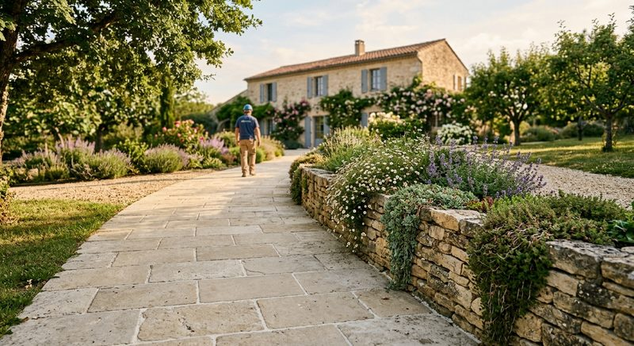
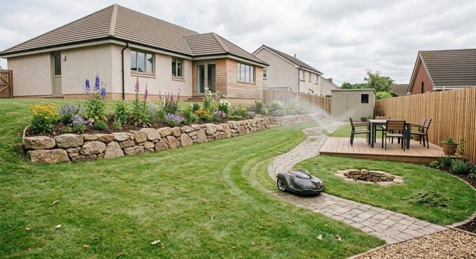
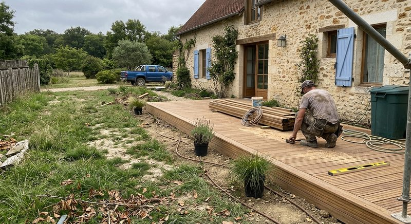

Création de jardins
- Plantations et massifs
- Engazonnement
- Haies et arbustes
- Aménagement paysager
Création, terrasses et entretien : choisissez le domaine qui correspond à votre jardin.



Du projet de jardin à la terrasse ou à l’allée, selon votre besoin.

Un entretien régulier pour garder votre extérieur soigné.
Décrivez votre besoin, puis appelez l’entreprise ou écrivez-nous.
Paysagiste à Egly (91) : aménagement et entretien de jardins.
© Eric Roche · Egly (91) · Maquette de démonstration